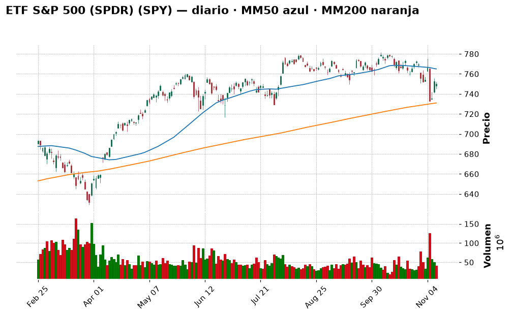
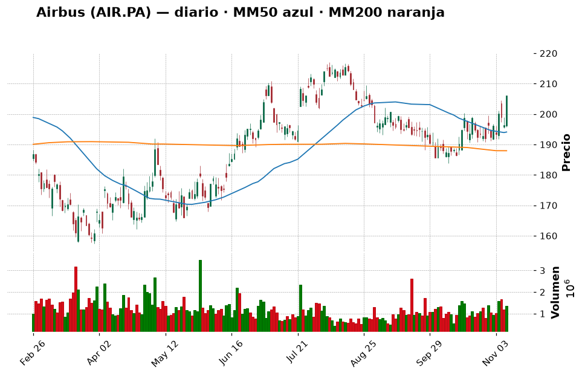
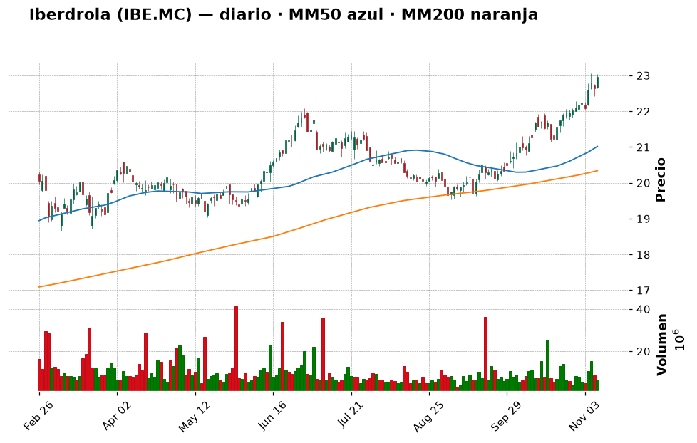
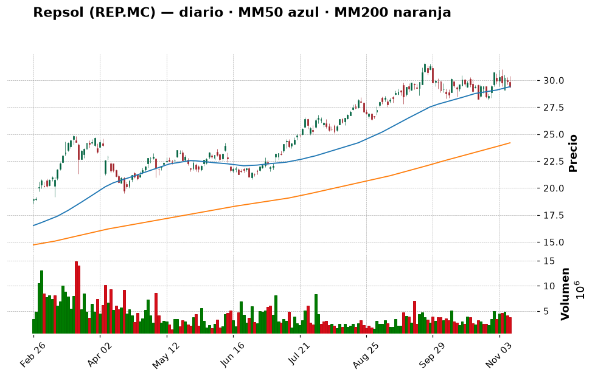
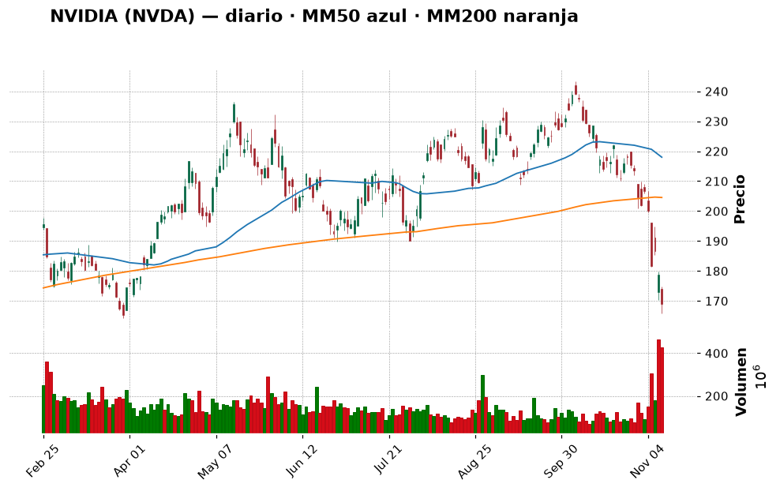
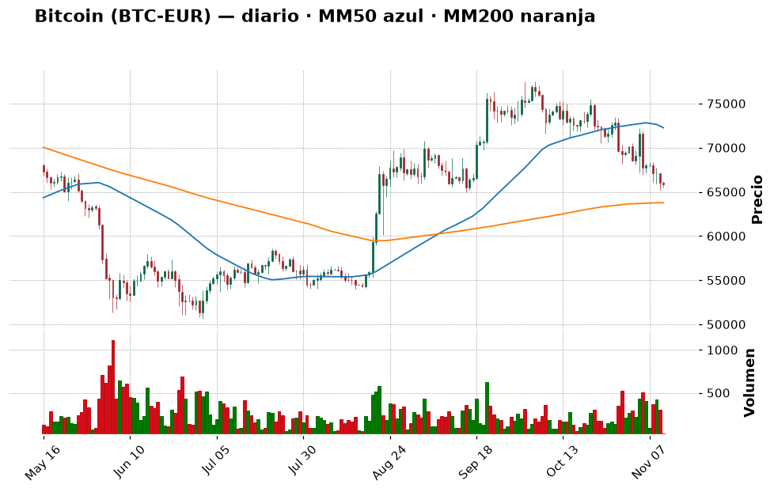
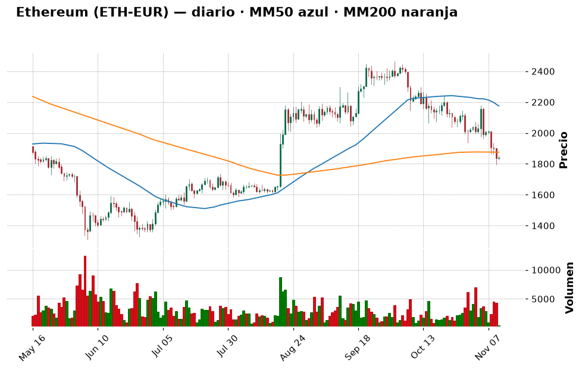

📈 Informe pre-apertura — miércoles 11 de noviembre de 2026
Generado automáticamente a las 08:05 (hora de Madrid) · Bolsa española abre a las 9:00 · Wall Street a las 15:30 · Cripto: 24/7
Termómetro del día: 🟡 prudencia — la inflación de EE. UU. salió peor de lo esperado y la Reserva Federal subirá tipos casi seguro en diciembre (91 %), pero los futuros de Wall Street rebotan con fuerza (Nasdaq 100 +1,6 %) gracias a los resultados de CoreWeave. Mucho ruido en ambas direcciones: buen día para no improvisar.
Lección de hoy: Los tipos de interés y los bancos centrales (Fed y BCE)
1. Lo que tienes que saber hoy
- El IPC de EE. UU. salió "caliente". En octubre los precios subieron un +0,4 % en el mes (se esperaba +0,3 %) y la inflación subyacente un +0,3 % (se esperaba +0,2 %) (Expansión, CoinDesk). Resultado: el mercado da ya un 91 % de probabilidad a una subida de tipos de 0,25 puntos en diciembre y un ~10 % a una de 0,50 (CME FedWatch vía Investing.com). El bono de EE. UU. a 10 años ronda el 5 %, su nivel más alto en mucho tiempo. Por eso la lección de hoy son los tipos de interés.
- Wall Street cayó ayer, pero hoy apunta a rebote. El S&P 500 cerró en 7.520,93 (−0,38 %) y el Nasdaq en 25.065,87 (−0,74 %), lastrados por Nvidia (−5,5 %), que ya ha borrado todo lo ganado en 2026. Esta madrugada, los futuros suben (S&P 500 +0,7 %, Nasdaq 100 +1,6 %) porque CoreWeave (alquila centros de datos para IA) presentó buenos resultados y sube más de un 16 % fuera de hora.
- España: el Ibex se quedó a las puertas de los 20.000 (cerró en 19.936,4, +0,98 %) y es la gran bolsa que más sube en noviembre (más de un +7 % según Cinco Días). Hoy hay huelga general (la primera de CCOO y UGT juntos en 14 años) y el 29 de noviembre, elecciones generales: ruido político, normalmente sin gran efecto duradero en bolsa.
- Tu cartera: has dado el primer paso del plan — la orden del ETF S&P 500 (SPY5.L, ~315 €) — ✅. Ahora mismo lo correcto es dejarla trabajar y no adelantar tramos: con la Fed subiendo tipos puede haber mejores precios en las próximas semanas.
2. ✅ Recomendaciones del día (resumen)
| Activo | Acción | Cuánto (orientativo) | Horizonte | Por qué, en una frase | Confianza |
|---|---|---|---|---|---|
| ETF S&P 500 (SPY5.L / SPY) | Mantener | Tramo 1 (~315 €) en curso; tramo 2 (~600 €) hacia el 1 de diciembre | Años (5+) | El plan en tramos funciona justo en semanas así; no hace falta acelerar | media |
| Airbus (AIR.PA) | Esperar | Hasta 3–4 % (~300–400 €) en 2 tramos si vuelve a ~202 € o cierra por encima de 217 € | Años | Muy buenas noticias (pedido de Cathay, 74 entregas en octubre), pero choca con su resistencia de 211 € | media |
| Iberdrola (IBE.MC) | Esperar | Hasta 5 % (~480 €) si retrocede a 21–22 € | Años | Gran empresa defensiva, pero RSI 75,7 (sobrecompra) y en máximos | media |
| Repsol (REP.MC) | Mantener | No añadir | Años | Ganas un +137 %; el petróleo bajó de 90 $ y le quita impulso | media |
| NVIDIA (NVDA) | Evitar | 0 € | — | Tendencia rota (−17 % bajo su MM200) y "media docena de investigaciones" | media |
| Inditex (ITX.MC) | Mantener | No añadir | Años | +121 % en tu posición, a un paso de su máximo anual | media |
| Apple (AAPL) | Mantener | No añadir | Años | Tendencia alcista sana (+16 % sobre su MM200) | media |
| Bitcoin (BTC-EUR) | Comprar | 100 € desde el USDC, solo si no lo hiciste ayer; luego ~100 €/mes | Años | Miedo (29/100) y precio cerca de su MM200; poco, en tramos y aceptando que puede bajar más | baja |
| Ether (ETH-EUR) | Esperar | 0 € hoy | Años | Ha perdido su MM200 (1.876 €) y el impulso sigue empeorando | media |
| Shiba Inu (SHIB) | Evitar | No añadir | — | Memecoin, −53 % en un año; no encaja con tu perfil | alta |
(Santander, BBVA, Telefónica, Microsoft, Amazon y el ETF del Nasdaq tienen su veredicto en la tabla "Resto de la watchlist" de la sección 6.)
Día de paciencia activa: el plan ya está en marcha (primer tramo del ETF). Con la Fed endureciendo y el bono al 5 %, la bolsa puede seguir dando sustos; eso es una oportunidad para los próximos tramos, no un motivo para correr. Lo único "nuevo" que tendría sentido hoy son ~100 € de bitcoin si ayer no los compraste.
3. Agenda del día
| Hora (Madrid) | Evento | Por qué importa |
|---|---|---|
| Todo el día | Huelga general en España (24 h, CCOO, UGT, CGT, CNT) por vivienda, salarios y precios | Posibles problemas en transporte; para la bolsa suele ser ruido de un día |
| Todo el día | Día de los Veteranos en EE. UU.: el mercado de bonos cierra (o funciona limitado); la bolsa abre con normalidad | Menos volumen en Wall Street; menos referencias del bono |
| Todo el día | "Día del Soltero" en China (Singles Day), la gran jornada de compras online | Termómetro del consumo chino (afecta a lujo y moda: Inditex) |
| 9:00 | Apertura de la Bolsa española | Se verá si el Ibex vuelve a intentar los 20.000 puntos |
| 15:30 | Apertura de Wall Street | Si se confirma el rebote de la tecnología (CoreWeave) o pesa más el miedo a la Fed |
| Durante el día | Resultados empresariales: no he podido confirmar un calendario fiable para hoy (las búsquedas solo devolvían fechas de otros años) | Mejor no suponer |
| Jue 12 | PIB del Reino Unido · Votación de los decretos de vivienda en España | Pistas de crecimiento europeo; relevante para banca e inmobiliarias |
| Vie 13 | IPP (precios industriales) de EE. UU. · Revisión del rating de Alemania (Fitch) | Segunda pista de inflación de la semana: si sale alta, más presión sobre la Fed |
| Dom 29 | Elecciones generales en España | Ruido político durante todo el mes |
4. Cómo llegan los mercados
España y Europa
Ayer (martes 10): el Ibex 35 cerró en 19.936,4 puntos (+0,98 %), pero no logró aguantar los 20.000 que tocó durante la sesión (Europa Press). En la semana acumula un +6,0 % y está a solo un 2 % de su máximo de 52 semanas (20.356,5). Según Cinco Días, el Ibex es la gran bolsa que más sube en noviembre (más de un +7 %), apoyado en la remontada de la banca y la caída del petróleo; Expansión habla de cuatro valores del Ibex que marcaron ayer máximos históricos. El Euro Stoxx 50 cerró en 6.327,87 (+0,59 %).
Banca: Santander subió un +1,68 % (11,26 €). En lo corporativo, el banco da un primer paso para cumplir con las exigencias del BCE y reducir el poder del presidente (Cinco Días): Ana Botín dijo que será la última de su familia en presidir el banco (Europa Press). Además, Santander está entre los 21 bancos (con Goldman Sachs, Citi y Deutsche Bank) que comprometen 270 millones de dólares a una stablecoin bancaria ("Project Faro") que quieren lanzar en 2027 (CoinDesk, Decrypt). 💡 Una stablecoin es una criptomoneda que vale siempre 1 dólar (como tu USDC): los bancos quieren competir con Tether y Circle.
Aerolíneas y aeroespacial: IAG, Ryanair, Air France-KLM y Lufthansa suben tras sus resultados gracias al combustible más barato (Cinco Días), y Citi ve "altamente atractiva" IAG (Expansión). El Gobierno aprobó 11.860 millones en contratos de defensa, de los que unos 1.000 millones son para Airbus (El País, Expansión).
⚠️ Ojo con las fechas de los datos: en la tabla técnica, BBVA, Inditex, Iberdrola, Repsol y Airbus tienen su último dato a fecha 9-nov (lunes): a nuestra fuente le falta el cierre del martes de esos valores. No son "el cierre de ayer".
Estados Unidos
Ayer: el S&P 500 cerró en 7.520,93 (−0,38 %), el Nasdaq en 25.065,87 (−0,74 %) y el Dow Jones un −0,3 % (Investing.com). El rebote del lunes "chocó" con el IPC: subieron los rendimientos de los bonos y Nvidia cayó otro −5,5 %, hasta 168,89 $, muy cerca de su mínimo de 52 semanas (164,27 $). El "affair Huang" ya pone a Nvidia en el foco de media docena de investigaciones (Expansión), y Reuters informa de que una universidad ligada al ejército chino compró chips H200 pese a las restricciones de EE. UU. (Investing.com).
Esta madrugada (futuros, ~07:40 h de Madrid, Yahoo Finance): S&P 500 7.594 (+0,66 %) y Nasdaq 100 28.270 (+1,56 %). El motivo: CoreWeave batió previsiones de ingresos, aspira a ser rentable en 2028 y su acción sube más de un 16 % fuera de hora; además TSMC (el gran fabricante de chips) invertirá 1.000 millones de dólares en Anthropic y OpenAI, y la bolsa de Taiwán subió un +3,1 % (Investing.com). Traducción: el mercado vuelve a creer en la demanda de IA... por ahora. Expansión publica hoy cuál sería "el terrible escenario para los mercados si pincha la IA en 2027": la duda no ha desaparecido.
Macro (tipos de interés, inflación, divisas, materias primas)
- Fed: tipos en el 3,75–4,00 %. Tras el IPC, el mercado da un 91 % a una subida de 0,25 en diciembre y un 10 % a una de 0,50 (Investing.com). El gobernador Waller dijo que con un IPC subyacente del 0,3 % (justo lo que salió) consideraría subir medio punto; Lorie Logan (Fed de Dallas) cree que hacen falta al menos dos subidas más, y Goldman Sachs espera otra en marzo. 💡 Subir tipos es "encarecer el dinero": préstamos e hipotecas más caros, se consume menos y se frena la inflación... pero las acciones pierden atractivo frente a los bonos.
- BCE: miembros del BCE y de la Fed anticipan subidas de tipos en las reuniones de diciembre porque la inflación sigue demasiado alta (Expansión). Ayer hablaron Philip Lane (sobre cómo comunica el BCE su política) y Piero Cipollone (sobre el euro digital).
- Bonos: el bono de EE. UU. a 10 años ronda el 5,0 % (MarketWatch, Investing.com). 💡 La rentabilidad del bono es lo que cobra quien presta dinero al Estado. Si un bono "casi sin riesgo" paga un 5 %, muchos inversores se preguntan para qué arriesgarse en bolsa: por eso cuando sube, la bolsa (sobre todo la tecnológica) suele sufrir.
- Euro/dólar: 1,1157 (−0,1 %), cerca de su mínimo de 52 semanas (1,1110) (Yahoo Finance). El dólar se fortalece porque la Fed sube tipos. 💡 Buena noticia para tus 2.717 USDC: hoy valen 2.435 €, unos 20 € más que hace dos días, sin hacer nada. Funciona en los dos sentidos.
- Petróleo Brent: ayer bajó de 90 $ por primera vez desde agosto (−3 %) porque Trump dijo ver "avances" en las negociaciones con Irán (Expansión); esta mañana rebota hasta ~92,5 $ (+1,1 %) (Yahoo Finance). Más barato = bueno para la inflación y las aerolíneas; malo para Repsol.
- España: las subidas salariales se estancan en el 3 %, casi dos puntos por debajo del IPC (Expansión): los sueldos pierden poder de compra, que es justo uno de los motivos de la huelga de hoy.
5. Panorama técnico de la watchlist
💡 Cómo leer esta tabla: la tendencia resume si el precio lleva meses subiendo, bajando o de lado
(comparando el precio con sus medias de 50 y 200 días). El RSI mide de 0 a 100 si las subidas o bajadas
recientes han sido muy fuertes: por encima de 70 se dice "sobrecompra" (quizá ha subido demasiado rápido),
por debajo de 30 "sobreventa". Son pistas, no predicciones.
| Valor | Último cierre | Día | 1 mes | 1 año | Tendencia | RSI | vs MM200 |
|---|---|---|---|---|---|---|---|
| IBEX 35 (^IBEX) | 19.936,4 (10-nov) | +0,98 % | +3,37 % | +20,26 % | ➡️ lateral | 62,9 🟡 | +6,4 % |
| Euro Stoxx 50 (^STOXX50E) | 6.327,87 (10-nov) | +0,59 % | +2,04 % | +12,77 % | ➡️ lateral | 58,4 🟡 | +3,4 % |
| S&P 500 (^GSPC) | 7.520,93 (10-nov) | −0,38 % | −3,67 % | +11,77 % | ➡️ lateral | 44,5 🟡 | +2,6 % |
| Nasdaq Composite (^IXIC) | 25.065,87 (10-nov) | −0,74 % | −8,00 % | +8,96 % | ➡️ lateral | 40,9 🟡 | −0,2 % |
| Banco Santander (SAN.MC) | 11,26 € (10-nov) | +1,68 % | −8,22 % | +17,86 % | ➡️ lateral | 49,0 🟡 | −0,3 % |
| BBVA (BBVA.MC) | 23,29 € (9-nov) | +2,46 % | +0,78 % | +23,19 % | ➡️ lateral | 54,1 🟡 | +8,2 % |
| Inditex (ITX.MC) | 59,66 € (9-nov) | +1,05 % | +10,77 % | +19,66 % | ➡️ lateral | 64,9 🟡 | +9,4 % |
| Iberdrola (IBE.MC) | 22,96 € (9-nov) | +1,37 % | +8,00 % | +28,30 % | 📈 alcista | 75,7 🔴 | +12,9 % |
| Telefónica (TEF.MC) | 3,43 € (10-nov) | +0,62 % | +6,62 % | −7,62 % | 📉 bajista | 53,2 🟡 | −6,0 % |
| Repsol (REP.MC) | 29,36 € (9-nov) | −1,81 % | −0,54 % | +75,76 % | ➡️ lateral | 49,0 🟡 | +21,4 % |
| Airbus (AIR.PA) | 206,00 € (9-nov) | +4,89 % | +9,69 % | −2,83 % | ➡️ lateral | 63,0 🟡 | +9,6 % |
| Apple (AAPL) | 348,51 $ (10-nov) | −0,62 % | +2,21 % | +29,81 % | 📈 alcista | 55,6 🟡 | +16,3 % |
| Microsoft (MSFT) | 533,16 $ (10-nov) | −2,20 % | −1,48 % | +7,31 % | 📈 alcista | 52,3 🟡 | +21,0 % |
| NVIDIA (NVDA) | 168,89 $ (10-nov) | −5,47 % | −25,38 % | −10,24 % | ➡️ lateral | 23,9 🟢 | −17,4 % |
| Amazon (AMZN) | 270,87 $ (10-nov) | +1,48 % | +4,37 % | +10,83 % | ➡️ lateral | 61,6 🟡 | +10,9 % |
| ETF S&P 500 (SPY) | 749,92 $ (10-nov) | −0,37 % | −3,62 % | +11,77 % | ➡️ lateral | 44,6 🟡 | +2,6 % |
| ETF Nasdaq 100 (QQQ) | 674,76 $ (10-nov) | −0,68 % | −9,55 % | +10,66 % | ➡️ lateral | 40,1 🟡 | −1,0 % |
(🟢 = RSI bajo, posible "rebajas"; 🔴 = RSI alto, quizá demasiado rápido; 🟡 = neutral. En los valores marcados con 9-nov, la columna "Día" es la variación del lunes 9, no la de ayer.)
En conjunto: la imagen es de dos velocidades. Europa y España están fuertes (Ibex +6,4 % sobre su media de 200 sesiones y cerca de máximos), con la banca y las eléctricas tirando. EE. UU. está "de lado": el S&P 500 sigue por encima de su MM200 (7.331), lo que mantiene viva la tendencia de fondo, pero por debajo de su MM50 (7.673), y el Nasdaq está justo en su MM200: es la frontera que separa una corrección normal de algo peor. Lo "estirado" es Iberdrola (RSI 75,7); lo "castigado", Nvidia (RSI 23,9). Telefónica sigue en tendencia bajista.
6. Ideas de bolsa: qué haría un experto
ETF S&P 500 (SPY5.L / SPY)Mantener(tramo 1 en marcha)

- Qué es: un fondo que compra de una vez las ~500 mayores empresas de EE. UU. Tu orden es la versión europea (UCITS) que cotiza en Londres, SPY5.L; el gráfico es del SPY estadounidense, que sigue exactamente el mismo índice.
- Por qué es noticia hoy: el IPC caliente y el bono al 5 % hicieron caer el índice ayer (−0,37 %), pero los futuros suben hoy un +0,7 %. Un dato curioso para entender la volatilidad: el presidente de la Fed de Chicago, Goolsbee, dijo que el gasto en centros de datos de IA se parece a un "recalentamiento a la antigua" (247 Wall St.).
- Lo que dice el gráfico: el SPY (749,92 $) está apoyado justo en un soporte (749,6 $), por encima de su MM200 (731 $) pero por debajo de su MM50 (765 $). RSI 44,6 (neutral) y MACD "mejorando". A un −4,1 % de su máximo de 52 semanas. En lenguaje llano: la tendencia de fondo sigue en pie, pero el precio todavía no ha recuperado la caída de octubre; las líneas a vigilar son 729 $ por abajo y 765 $ por arriba.
- Lo positivo: es el núcleo que tu cartera necesitaba, diversificado y barato. Y ya lo has empezado.
- El riesgo: si la Fed sube medio punto o el bono pasa claramente del 5 %, el índice podría volver a la zona de 729–739 $.
- 🧑💼 Recomendación: MANTENER. Ya tienes en marcha el primer tramo (~315 €). La gracia del plan en tramos es precisamente no tener que acertar el día: el siguiente tramo toca hacia el 1 de diciembre, coincidiendo con tu aportación. Si antes de esa fecha el SPY cayera a la zona de 729–739 $ (soportes + MM200), podrías adelantar ese segundo tramo: comprarías más barato lo mismo.
- Cuánto y cómo: tramo 2 de ~600 € (≈6 % de tu patrimonio) hacia el 1 de diciembre; objetivo ~35 % de tu patrimonio en 6 tramos. Cuando se ejecute la orden, actualiza en
cartera.csvel precio real (ahora figura el estimado de 751,61 $). - Horizonte: 5 años o más.
- Qué me haría cambiar de opinión: un cierre semanal del SPY por debajo de 729 $: no vendería lo comprado, pero pausaría el siguiente tramo hasta ver estabilidad.
- Qué mirar para entenderlo: la línea de la MM50 en el gráfico (~765 $). Si el precio la supera y se mantiene unos días, el rebote ganaría credibilidad.
- Confianza: media
Airbus (AIR.PA)Esperar(sigue en tu lista de la compra)

- Qué es: el mayor fabricante de aviones comerciales del mundo (europeo, con fábricas en Francia, Alemania y España), además de helicópteros, defensa y espacio.
- Por qué es noticia hoy: un buen puñado de noticias, todas positivas:
- Cathay Pacific encarga 14 aviones (11 A330-900 y 3 A321neo para HK Express) por 5.100 millones de dólares a precio de catálogo; la aerolínea dice que obtuvo "importantes descuentos" (Yahoo Finance).
- En octubre Airbus entregó 74 aviones, frente a 49 de Boeing (Yahoo Finance). Hasta septiembre llevaba 547 entregas y su objetivo anual es de ~870 (Demócrata): mi cálculo es que con las de octubre suma ~621 y necesita unas 249 en noviembre y diciembre, un ritmo exigente (en el pasado lo ha logrado acelerando a final de año, pero es el riesgo a vigilar).
- El Gobierno español aprobó contratos de defensa con ~1.000 millones para Airbus (Expansión).
- Lo que dice el gráfico (datos a 9-nov): 206 € tras un salto del +4,9 % ese día; está por encima de sus medias (MM50 194 €, MM200 188 €), RSI 63 (neutral alto) y MACD mejorando. Pero tiene resistencias muy cerca: 211 € y 216,5–217 €, y su máximo de 52 semanas está en 221,3 €. Soporte cercano: 201,65 €.
- Lo positivo: cartera de pedidos enorme, ventaja sobre Boeing, más gasto en defensa en Europa y combustible más barato que ayuda a sus clientes.
- El riesgo: problemas de suministro (motores, cabinas) que retrasan entregas; si no llega al objetivo de ~870, la acción lo notaría. Y en el último año ha ido de lado (−2,8 %).
- 🧑💼 Recomendación: ESPERAR. El negocio va bien, pero la acción ha subido casi un +10 % en un mes y está chocando con una "pared" (211 €). Para un principiante, entrar justo debajo de una resistencia es comprar con poco margen. Compraría en dos situaciones: (a) un retroceso hacia ~202 € (soporte), o (b) un cierre claro por encima de 217 € (la pared rota).
- Cuánto y cómo: hasta 3–4 % del patrimonio (~300–400 €), en 2 tramos.
- Horizonte: años.
- Qué me haría cambiar de opinión: un cierre por debajo de 190 € (MM200 y soporte) o un recorte del objetivo de entregas.
- Qué mirar para entenderlo: las entregas de noviembre (se publican a principios de diciembre) y si el precio supera 217 €.
- Confianza: media
Iberdrola (IBE.MC)Esperar

- Qué es: la mayor eléctrica española (redes y renovables en España, Reino Unido y EE. UU.). Negocio estable, con dividendo.
- Por qué es noticia hoy: tras subirla a "sobreponderar" el lunes, Morgan Stanley elige como su favorita de las eléctricas europeas para 2027 a la británica National Grid, y dice que el sector seguirá batiendo al mercado por la seguridad energética y la electrificación (Investing.com vía Yahoo Finance). Es un viento de cola para todo el sector, también para Iberdrola.
- Lo que dice el gráfico (datos a 9-nov): tendencia alcista (22,96 €, +12,9 % sobre la MM200), a un 0,4 % de su máximo de 52 semanas (23,06 €). Pero RSI 75,7: sobrecompra. El precio se ha alejado mucho de sus medias (MM50 21,02 €); cuando eso pasa suele "volver" un poco hacia ellas. Soportes: 21,09 € y 20,83 €.
- Lo positivo: defensiva, regulada, con demanda eléctrica al alza por los centros de datos.
- El riesgo: las eléctricas tienen mucha deuda, y subidas de tipos del BCE y la Fed la encarecen (ver lección de hoy). Comprar con RSI > 75 es comprar "en caliente".
- 🧑💼 Recomendación: ESPERAR. Me gusta como empresa para tu núcleo de dividendos, pero no a este precio. Esperaría un retroceso a la zona de 21–22 €.
- Cuánto y cómo: hasta 5 % (~480 €), en 2 tramos.
- Horizonte: años.
- Qué me haría cambiar de opinión: si consolida varias semanas por encima de 23 € con el RSI ya por debajo de 70 (la sobrecompra se "enfría" sin bajar), entraría con un primer tramo más pequeño.
- Qué mirar para entenderlo: el RSI. Si baja de 70 sin que el precio caiga mucho, es una señal sana.
- Confianza: media
Repsol (REP.MC)Mantener(la tienes)

- Qué es: la petrolera española (extracción, refino, gasolineras y renovables).
- Por qué es noticia hoy: el Brent bajó de 90 $ por primera vez desde agosto (Expansión) por los avances con Irán; esta mañana rebota a ~92,5 $. El petróleo barato es la razón por la que Repsol fue ayer de los pocos valores en rojo y las aerolíneas suben.
- Lo que dice el gráfico (datos a 9-nov): 29,36 €, justo en su MM50 (29,40 €) y muy por encima de su MM200 (24,19 €; +21 %). RSI 49 (neutral) y MACD empeorando: el impulso se está frenando tras un año espectacular (+75,8 %). Soportes: 28,3 € y 27,8 €; resistencias: 30,4 € y 31,6 € (máximo anual).
- Lo positivo: sigue en tendencia de fondo alcista y paga dividendo.
- El riesgo: si hay acuerdo con Irán, el petróleo podría bajar más.
- 🧑💼 Recomendación: MANTENER. Ganas un +137 % en tu posición (2 acciones). No añadiría (el viento ya no sopla a favor), pero tampoco vendería: es una posición diminuta y vender te costaría comisión e impuestos por algo que sigue en tendencia de fondo.
- Cuánto y cómo: no añadir.
- Horizonte: años.
- Qué me haría cambiar de opinión: un cierre por debajo de 27,8 € con el Brent cayendo hacia 80 $: ahí valoraría Vender.
- Qué mirar para entenderlo: el precio del Brent (si se mantiene por debajo de 90 $, presión para Repsol).
- Confianza: media
NVIDIA (NVDA)Evitar

- Qué es: el gran fabricante de chips para inteligencia artificial.
- Por qué es noticia hoy: otro −5,5 % ayer, hasta 168,89 $, y ya ha borrado lo ganado en 2026 (Decrypt). El escándalo de su CEO, Jensen Huang, la ha puesto en el foco de media docena de investigaciones (Expansión); Cinco Días critica las "graves deficiencias de su consejo"; la empresa ha contratado a un exfiscal para investigar (MarketWatch). Por otro lado, Cathie Wood (ARK) compró 90.443 acciones aprovechando la caída (247 Wall St.).
- Lo que dice el gráfico: caída del −25 % en un mes; precio −17 % bajo su MM200 y −22,5 % bajo su MM50, a un 2,8 % de su mínimo de 52 semanas (164,27 $). RSI 23,9: sobreventa, con volumen 2,8 veces el normal (ventas intensas).
- Lo positivo: la demanda de IA sigue fuerte (CoreWeave, TSMC), y la sobreventa puede provocar rebotes.
- El riesgo: que el problema no sea el negocio sino el gobierno corporativo (la confianza en quién dirige). Eso no se arregla en días.
- 🧑💼 Recomendación: EVITAR. 💡 "Sobreventa" no significa "barata": significa que ha caído muy rápido. Una tendencia rota con un escándalo abierto no es lugar para un principiante. Ya tienes exposición indirecta a Nvidia a través del ETF S&P 500 (es una de sus mayores empresas): esa es la forma prudente de "tenerla".
- Cuánto y cómo: 0 €.
- Qué me haría cambiar de opinión: que se aclare la investigación y el precio recupere su MM200 (~205 $).
- Qué mirar para entenderlo: si el mínimo de 164 $ aguanta; perderlo sería otra señal de debilidad.
- Confianza: media
Resto de la watchlist: veredicto rápido
| Valor | Acción | Por qué (1 frase) | Nivel a vigilar |
|---|---|---|---|
| Banco Santander (SAN.MC) | Esperar | +10 % en una semana, pero sigue justo debajo de su MM200 (11,29 €); noticias: cambios de gobierno corporativo pedidos por el BCE y participación en la stablecoin bancaria "Project Faro" | Comprar si cierra sobre 11,98 € (MM50); soporte 10,34 € |
| BBVA (BBVA.MC) | Esperar | Tendencia de fondo sana (+8 % sobre MM200) y la subida de tipos ayuda a la banca, pero sigue por debajo de su MM50 (23,82 €) y no hay prisa; noticia: usa la IA de Riskfuel para valorar productos estructurados (Yahoo Finance) | Resistencia 25,28 €; soporte 22,77 € (datos a 9-nov) |
| Inditex (ITX.MC) | Mantener | Tu posición gana +121 %; a un 1,6 % de su máximo anual (60,64 €); aporta 44 M€ al primer fondo de sostenibilidad textil (Europa Press) | Soporte 56,2 € (datos a 9-nov) |
| Telefónica (TEF.MC) | Evitar | Única de la lista en tendencia bajista (−6 % bajo su MM200, −7,6 % en un año); sin noticias propias hoy | Revisar si supera 3,71 € |
| Apple (AAPL) | Mantener | Tendencia alcista sana (+16 % sobre MM200), +102 % en tu posición; Binance avisa de un fallo de iOS que podría exponer claves privadas de monederos cripto (Decrypt): actualiza tu iPhone si usas apps cripto | Soporte 338,7 $; resistencia 351,7 $ |
| Microsoft (MSFT) | Esperar | Tendencia alcista (+21 % sobre MM200), pero −2,2 % ayer y MACD empeorando; es socio clave de la IA y el mercado aún duda | Soporte 505 $; comprar con más claridad sobre 551 $ |
| Amazon (AMZN) | Esperar | Buena semana (+8 %) y AWS ya factura más que 476 empresas del S&P 500 (Motley Fool); "Black Friday Week" del 19 al 30-nov | Resistencia 274,75 $; soporte 244,7 $ |
| ETF Nasdaq 100 (QQQ) | Esperar | Por debajo de su MM200 (−1 %) y −9,6 % en un mes; Barchart advierte de que podría caer mucho más si pincha la IA: para ti, mejor el S&P 500, más diversificado | Recuperar 681 $ (MM200); soporte 661 $ |
7. ₿ Criptomonedas
💡 Las criptomonedas cotizan 24 horas, 7 días a la semana: los precios son de esta mañana (en euros).
Son mucho más volátiles que las acciones: caídas del 50 % o más han ocurrido varias veces.
Sentimiento: Fear & Greed 29/100 (miedo; ayer 32, hace una semana 34, hace un mes 69 —codicia—) · Capitalización total 2,56 billones $ (−1,7 % en 24 h; −46,9 % bajo su máximo histórico de octubre de 2025) · Dominancia de Bitcoin 57,8 %.
En un mes el ánimo ha pasado de la codicia al miedo. La causa principal es la misma que en bolsa: tipos más altos. Las criptomonedas no pagan intereses, así que cuando el dinero "seguro" rinde más, pierden atractivo.
Radar Coinbase (408 monedas comprables · hoy suben 60 y bajan 299 · en 7 días suben 32 y bajan 329):
- Mayores por capitalización (7 días): BTC −5,8 %, ETH −10,8 %, BNB −3,6 %, XRP −17,2 %, SOL −11,3 %, HYPE −16,0 %, ZEC −23,2 %, DOGE −9,6 %.
- Más suben (7 d, top 100): INJ (+7,4 %), ETHFI (+6,7 %), PEPE (+5,2 %), RENDER (+2,7 %) · Más bajan: ZEC (−23,2 %), VVV (−21,7 %), WLD (−21,3 %), PUMP (−20,8 %), XRP (−17,2 %).
La caída es general: 9 de cada 10 monedas bajan en la semana. Las pocas que suben son pequeñas (puestos 45–100) o memecoins (PEPE): no veo ahí nada que justifique una compra para tu perfil. (PAXG, que aparece "estable", es un token respaldado por oro, no una oportunidad cripto.)
| Moneda | Ranking | Precio (€) | 24 h | 7 días | 1 mes | 1 año | Tendencia | RSI | vs MM200 |
|---|---|---|---|---|---|---|---|---|---|
| Bitcoin (BTC) | #1 | 65.895,73 | −0,17 % | −7,98 % | −10,06 % | −25,91 % | ➡️ lateral | 33,8 | +3,3 % |
| Ether (ETH) | #2 | 1.839,34 | +0,16 % | −14,68 % | −16,11 % | −37,61 % | ➡️ lateral | 30,5 | −2,0 % |
| XRP (XRP) | #6 | 0,9455 | 0,00 % | −18,58 % | −21,41 % | −54,19 % | ➡️ lateral | 24,1 | −14,1 % |
| Solana (SOL) | #7 | 73,95 | −0,82 % | −13,04 % | −21,94 % | −44,58 % | ➡️ lateral | 24,0 | −4,7 % |
| Shiba Inu (SHIB) | #42 | 0,00000395 | −1,50 % | −5,50 % | −14,50 % | −52,64 % | ➡️ lateral | 36,6 | −11,1 % |
Noticias que importan:
- IPC caliente → bitcoin cerca de mínimos de 11 semanas (Cointelegraph, CoinDesk): los operadores dan por hecha la subida de tipos de diciembre.
- Salidas de los ETF de bitcoin: −201 millones de dólares en un día, mientras la bolsa rebotaba; y la minera MARA vendió 13.597 BTC (~1.100 M$) en seis semanas y planea vender más (CoinDesk). Más oferta y menos demanda institucional = presión bajista.
- Hackeos y robos (recordatorio de por qué la custodia importa): Initia sufre su segundo ataque en 3 semanas (3,27 M$), secuestran el dominio de Across Protocol, robos en monederos LNbits, y el exchange brasileño Mercado Bitcoin reanuda retiradas tras un hackeo de 49 M$ (Cointelegraph).
- Bancos contra las stablecoins: Goldman, Citi, Santander y otros 18 comprometen 270 M$ para su propia stablecoin en 2027 (Decrypt, CoinDesk).
- Regulación: Coinbase, Kalshi y la matriz de Kraken apoyan a la CFTC en un pleito sobre "futuros perpetuos" de acciones (CoinDesk); el aliado cripto Tom Emmer, elegido "whip" de la minoría republicana (Cointelegraph).
Bitcoin (BTC)Comprar(poco y en tramos)

- Qué es: la primera y mayor criptomoneda; su oferta máxima está limitada a 21 millones de unidades.
- Lo que dice el gráfico: 65.896 € esta mañana. Acaba de perder por muy poco el soporte de ~65.900 € del que hablábamos ayer; el siguiente está en 64.918 € y, por debajo, su MM200 (63.768 €). Por encima, resistencias en 69.923 € y 70.745 €. RSI 33,8 (cerca de sobreventa) y MACD "mejorando". Está un −27,6 % por debajo de su máximo de 52 semanas (90.990 €). En llano: está bajando hacia su "suelo de largo plazo" (la MM200), que es donde un comprador paciente suele empezar a mirar.
- 🧑💼 Recomendación: COMPRAR, solo 100 €. Si ya compraste ayer los 100 € que proponíamos, no compres más hoy: el siguiente tramo, con la aportación del 1 de diciembre. Si no lo hiciste, 100 € hoy desde el USDC son razonables: el miedo (29/100) suele dar mejores precios de entrada que la euforia, y se trata de una cantidad pequeña que no pone en riesgo tu patrimonio.
- Cuánto y cómo: 100 € (~1 % del patrimonio) por el par BTC-USDC o BTC-EUR en Coinbase; luego ~100 €/mes. Tu cripto pesa un 0,8 % frente al tope del 25 % (margen de 3.130 €), pero para un perfil moderado yo no pasaría del 5 % total en los próximos meses.
- Qué me haría cambiar de opinión: un cierre diario claro por debajo de la MM200 (~63.800 €): pausaría los tramos y esperaría a ver si busca 54.000 € (siguiente soporte).
- El riesgo: con la Fed subiendo tipos y los ETF vendiendo, bitcoin podría caer otro 15–20 % sin que nada "esté roto". Solo invierte lo que aguantarías ver a la mitad.
- Confianza: baja
Ether (ETH)Esperar

- Qué es: la segunda criptomoneda; la red Ethereum permite programas ("smart contracts") y es la base de muchas stablecoins y aplicaciones.
- Lo que dice el gráfico: 1.839 €, ya por debajo de su MM200 (1.876 €), con el MACD empeorando y RSI 30,5. −14,7 % en una semana y −40,7 % bajo su máximo anual. Soportes en 1.607 € y 1.581 €. Una noticia que matiza: la cola de quienes quieren dejar de hacer staking cayó de 457.840 a 5.061 ETH en un mes (BeInCrypto) — los grandes tenedores no están vendiendo en pánico.
- 🧑💼 Recomendación: ESPERAR. Ha perdido su "suelo de largo plazo" y el impulso sigue a la baja. Compraría un primer tramo pequeño (50 €) si recupera 1.876 € (señal de que la caída fue un mal momento) o si cae a la zona de 1.600 € (soporte).
- Cuánto y cómo: 0 € hoy; luego, como mucho, la mitad de lo que pongas en bitcoin.
- Qué me haría cambiar de opinión: recuperar la MM200 con el MACD girando a "mejorando".
- El riesgo: es más volátil que bitcoin (volatilidad anualizada 55 % frente a 38 %).
- Confianza: media
Shiba Inu (SHIB)Evitar
- Qué es: una "memecoin" (moneda nacida como broma, sin uso real relevante).
- Lo que dice el gráfico: −52,6 % en un año, −11 % bajo su MM200, −54 % bajo su máximo de 52 semanas.
- 🧑💼 Recomendación: EVITAR (no añadir). Tienes 3,95 € (compraste 6 €). Es tan poco que no merece la pena ni la comisión de venderla; quédatela como "recordatorio" de por qué no se persiguen las modas.
- El riesgo: que pierda casi todo su valor; con 4 € no es un problema, con 400 € sí lo sería.
- Confianza: alta
8. 💼 Tu cartera
Valor total: 9.705,82 € · Invertido: 584,77 € · Ganancia/pérdida no realizada: +77,67 € (+15,3 % sobre lo que pagaste) · Realizada: 0 €
Reparto: acciones 2,0 % · ETF 3,2 % · cripto 0,8 % · liquidez 94,0 % · Cripto vs tope: 0,8 % de 25 % ✅ dentro (margen 3.130,53 €)
Liquidez disponible: 9.121,05 € (94,0 %: 6.685,80 € en euros en otro bróker + 2.717 USDC ≈ 2.435,25 € en Coinbase) · Próxima aportación: 200 € el 2026-12-01 (en 20 días)
| Activo | Cantidad | Precio medio | Precio actual | Valor (€) | G/P | Peso | Acción recomendada |
|---|---|---|---|---|---|---|---|
| Liquidez en euros (otro bróker) | 6.685,80 € | — | — | 6.685,80 | — | 68,9 % | Seguir el plan en tramos (sin prisa) |
| USDC (Coinbase) | 2.717 | 1 $ | 1 $ | 2.435,25 | 0 % | 25,1 % | Fuente de las compras cripto; hoy el dólar fuerte te favorece |
| ETF SPDR S&P 500 UCITS (SPY5.L) | 0,467 | 751,61 $ | 751,61 $ (estimado) | 314,60 | 0 % | 3,2 % | Mantener — orden pendiente; actualiza el precio real en el CSV |
| Bitcoin (BTC) | 0,00113223 | 74.000 € | 65.896 € | 74,61 | −11,0 % | 0,8 % | Comprar (100 €, solo si no lo hiciste ayer) |
| Inditex (ITX.MC) | 1 | 26,94 € | 59,66 € | 59,66 | +121,5 % | 0,6 % | Mantener — cerca de máximos |
| Repsol (REP.MC) | 2 | 12,37 € | 29,36 € | 58,72 | +137,4 % | 0,6 % | Mantener — sin ampliar |
| Apple (AAPL) | 0,15 | 171,99 $ | 348,51 $ | 46,86 | +102,6 % | 0,5 % | Mantener — tendencia alcista sana |
| Solaria (SLR.MC) | 1 | 14,99 € | 16,86 € | 16,86 | +12,4 % | 0,2 % | Mantener — no añadir (renovable pequeña y volátil) |
| Oryzon (ORY.MC) | 4 | 3,23 € | 2,38 € | 9,51 | −26,4 % | 0,1 % | Mantener — posición mínima; venderla costaría casi lo que vale |
| Shiba Inu (SHIB) | 1.000.000 | 0,000006 € | 0,00000395 € | 3,95 | −34,2 % | 0,04 % | Evitar — no añadir |
(Solaria y Oryzon no están en la watchlist, así que no tienen análisis técnico ni gráfico.)
Lo que ha cambiado desde ayer: has puesto en marcha el primer tramo del núcleo indexado (orden de 0,467 participaciones de SPY5.L, ~315 €, apartados de tu liquidez en euros). Es exactamente lo que haría un experto: empezar por lo diversificado y barato. Tu cartera.csv no tiene errores ✅; solo recuerda sustituir el precio estimado (751,61 $) por el real cuando se ejecute la orden, para que el informe calcule bien tu ganancia o pérdida.
¿Está diversificada? Todavía no: el 94 % es liquidez. Eso no es malo hoy (con la Fed subiendo tipos, tener "munición" es una ventaja), pero el plan es ir invirtiéndola mes a mes. Recordatorio del plan orientativo (6 meses):
| Destino | Objetivo | Estado | Siguiente paso |
|---|---|---|---|
| Núcleo: ETF S&P 500 (o MSCI World) | ~35 % (~3.400 €) | Tramo 1 de 6 en marcha (~315 €) | Tramo 2 (~600 €) hacia el 1-dic, o antes si el SPY cae a 729–739 $ |
| Grandes empresas (Iberdrola, Airbus, banca…) | ~10–15 % | 0 € | Solo a buen precio: IBE a 21–22 €, AIR a ~202 € o sobre 217 € |
| Cripto (sobre todo BTC) | ~5 % (~500 €) | 0,8 % | ~100 €/mes desde el USDC |
| Liquidez / colchón | ~45 % | 94 % | Colchón de 3–6 meses de gastos; el resto, en un depósito o fondo monetario mientras espera |
💡 Con tipos al alza, la liquidez que esperas invertir sí puede rendir algo: un depósito o un fondo monetario suelen seguir a los tipos del BCE. No dejes miles de euros "a cero" durante meses.
La aportación de 200 € del 1 de diciembre puede alimentar estos tramos (por ejemplo, 150 € al ETF y 50 € a bitcoin); el reparto detallado lo verás en el informe de finales de noviembre. Cuando la hagas, regístrala en cartera.csv como fila liquidez (compra de EUR).
9. Análisis de riesgo
| Riesgo | Nivel | Explicación |
|---|---|---|
| Fed más agresiva (subida de 0,50 en diciembre) | 🔴 | Waller ya lo plantea; el bono al 5 % presiona a la bolsa, sobre todo a la tecnológica, y a las criptomonedas |
| Escándalo Nvidia / dudas sobre la IA | 🟡 | Nvidia pesa mucho en el S&P 500 y el Nasdaq; CoreWeave y TSMC calman, pero la duda sigue |
| Ruido político en España (huelga hoy, elecciones el 29-nov) | 🟢 | Suele afectar poco a las grandes empresas del Ibex, que facturan sobre todo fuera de España |
| Petróleo e Irán | 🟡 | Un acuerdo baja el crudo (bien para inflación y aerolíneas, mal para Repsol); una ruptura lo dispararía |
| Cripto: salidas de ETF y ventas de mineros | 🔴 | Bitcoin está perdiendo soportes; si cae bajo su MM200 (~63.800 €), puede ir a buscar 54.000 € |
| Dólar/euro | 🟢 | Hoy te favorece (USDC vale más en euros); si se gira, ese efecto se revierte |
Qué podría salir mal hoy: que el rebote de los futuros se apague al abrir Wall Street (como pasó ayer) y que el bono a 10 años supere con claridad el 5 %. En ese caso el S&P 500 podría ir a buscar 7.420–7.310 (soportes y MM200) y bitcoin perder su MM200. Para ti, eso no cambia las recomendaciones: mantener lo comprado y, si el SPY llega a 729–739 $, adelantar el segundo tramo. La ventaja de tener el 94 % en liquidez es que las caídas juegan a tu favor.
10. 🎓 Aprende con el informe de hoy: Los tipos de interés y los bancos centrales (Fed y BCE)
- Qué es (en una frase): el tipo de interés es el "precio del dinero" (lo que cuesta pedir prestado y lo que te pagan por ahorrar), y los bancos centrales —la Fed en EE. UU. y el BCE en la zona euro— lo fijan para controlar la inflación: lo suben para frenarla y lo bajan para animar la economía.
- Ejemplo con números: imagina que la Fed sube su tipo del 4 % al 4,25 %. Una empresa que debe 1.000 millones pasa de pagar 40 a 42,5 millones al año en intereses: gana menos. Y tú, como ahorrador, ves que un bono del Estado de EE. UU. a 10 años te paga un 5 %: con 10.000 € cobrarías 500 € al año con muy poco riesgo. Ante esa alternativa, muchos inversores exigen más a la bolsa (o pagan menos por ella) → las acciones bajan, sobre todo las de crecimiento (tecnológicas), cuyo beneficio está muy en el futuro.
- Dónde lo has visto hoy: el IPC caliente (sección 1) → probabilidad de subida de la Fed del 91 % → bono al 5 % → caída del Nasdaq y de Nvidia (sección 4), bitcoin en mínimos de 11 semanas (sección 7), dólar más fuerte y tus USDC valiendo más en euros (secciones 4 y 8), y por qué Iberdrola, con mucha deuda, es sensible (sección 6).
- Por qué te importa como inversor: los tipos son la "gravedad" de los mercados: cuando suben, todo pesa más. También afectan a tu día a día: hipotecas, préstamos y lo que te paga un depósito. Y como tienes mucha liquidez, tipos más altos significan que tu dinero en espera puede rendir más en un depósito o fondo monetario.
- Error típico de principiante: pensar que "subida de tipos = vender todo". Los mercados se anticipan: una subida que ya se espera al 91 % ya está casi descontada en los precios. Lo que mueve de verdad la bolsa es la sorpresa (un dato peor de lo previsto, o una subida mayor de la esperada).
- Pregunta para pensar: si la Fed sube tipos y el BCE no, ¿qué suele pasar con el dólar frente al euro y cómo afecta eso a tus 2.717 USDC?
11. Consejo del día para inversores principiantes
Haz que tu plan sea más fuerte que las noticias. Ayer el mercado subió por la mañana, cayó por la tarde con el IPC y hoy rebota en los futuros por CoreWeave. Si cada titular te hiciera comprar o vender, acabarías pagando comisiones y entrando siempre tarde. Tú ya tienes un plan (tramos mensuales en el ETF, ~100 € al mes en bitcoin, una "lista de la compra" con precios para Iberdrola y Airbus). Escríbelo en un papel y, cuando dudes, pregúntate: "¿ha cambiado algo de lo que dice el plan, o solo ha cambiado el humor del mercado?". Casi siempre es lo segundo.
12. Glosario
- Tipo de interés: el precio del dinero: lo que pagas por un préstamo o lo que cobras por prestar/ahorrar.
- Banco central (Fed, BCE): la institución que fija los tipos de interés oficiales de un país o zona (EE. UU. y la zona euro) para controlar la inflación.
- IPC subyacente: la inflación sin alimentos frescos ni energía, que son muy volátiles; muestra mejor la tendencia de fondo.
- Bono a 10 años / rentabilidad del bono: un préstamo al Estado durante 10 años; su rentabilidad es el interés anual que paga. Es la referencia del "dinero seguro".
- Punto básico: una centésima de punto porcentual: subir 25 puntos básicos = subir 0,25 %.
- Stablecoin: criptomoneda diseñada para valer siempre lo mismo (normalmente 1 dólar), como el USDC.
- Media móvil (MM50, MM200): el precio medio de las últimas 50 o 200 sesiones; la MM200 se usa como "frontera" de la tendencia de largo plazo.
- Soporte / resistencia: niveles de precio donde antes se frenaron las caídas (soporte, el "suelo") o las subidas (resistencia, el "techo").
- RSI: indicador de 0 a 100 que mide la fuerza de las subidas y bajadas recientes; >70 sobrecompra, <30 sobreventa.
- MACD: indicador del impulso; "mejorando" sugiere que la presión compradora gana fuerza, "empeorando" lo contrario.
- Sobreventa: cuando un precio ha caído muy rápido; no significa que esté barato ni que vaya a rebotar ya.
- ETF UCITS: versión europea de un ETF, que cumple la normativa de la UE y es la que normalmente puede comprar un inversor español.
- Futuros: contratos que se negocian antes de la apertura y anticipan hacia dónde puede abrir un índice.
- Fear & Greed (miedo/codicia): índice de 0 a 100 que resume el ánimo del mercado cripto.
- Dominancia de Bitcoin: porcentaje del valor total del mercado cripto que corresponde a bitcoin.
- Memecoin: criptomoneda nacida como broma o moda, sin uso real relevante.
13. Fuentes
- Expansión — El IPC de EEUU sube un 0,4% en octubre por el alza de la gasolina
- CoinDesk — U.S. CPI rose stronger than expected 0.4% in October; core rate rose 0.3%
- Investing.com — Nasdaq futures jump on CoreWeave earnings; hot CPI reinforces Fed hike bets
- Investing.com — Bonds reel as hot inflation fuels jumbo Fed hike fears
- Investing.com — Fed rate hike odds in December at 88% after hot CPI · Goldman expects additional Fed rate hike in March
- MarketWatch — Stocks fall as the 10-year Treasury yield nears 5% mark
- Expansión — El BCE y la Fed anticipan subidas de tipos en las reuniones de diciembre
- Europa Press — El Ibex 35 pierde fuelle al cierre y no logra aguantar los 20.000 puntos
- Cinco Días — El Ibex lidera las grandes Bolsas en noviembre y se prepara para asaltar máximos históricos
- Expansión — Qué recorrido tienen los cuatro valores del Ibex que marcaron ayer récord
- Cinco Días — El Santander da un primer paso para cumplir con las exigencias del BCE y reducir el poder del presidente
- Europa Press — Ana Botín asegura que ella será la última de la familia Botín en la presidencia de Banco Santander
- Cinco Días — Las aerolíneas europeas vislumbran algo de luz en medio de la tormenta · Expansión — Citi ve "altamente atractiva" la inversión en IAG
- Expansión — Navantia recibe 4.600 millones en nuevos contratos de Defensa y Airbus otros 1.000 · El País — El Gobierno aprueba nuevos contratos con la industria militar por 11.860 millones
- Yahoo Finance — Cathay Pacific to buy 11 Airbus aircraft for US$5.1 bn · Boeing October Jet Deliveries Decline, Trail Airbus Tally
- Demócrata — Airbus rebasa las 70 entregas en septiembre y suma 547 aviones comerciales en 2026
- Investing.com vía Yahoo Finance — Morgan Stanley Picks this UK Grid Operator as Top Utility for Europe in 2027
- Expansión — El petróleo baja de 90 dólares por primera vez desde agosto
- Expansión — Las alzas salariales se estancan en el 3%, casi dos puntos por debajo del IPC actual
- Expansión — El 'affair Huang' pone a Nvidia en el foco de media docena de investigaciones · Cinco Días — El escándalo de Nvidia magnifica las graves deficiencias de su consejo · Decrypt — Nvidia Erases 2026 Gains
- Investing.com — China PLA-linked university bought Nvidia H200 chips despite U.S. curbs · 247 Wall St. — Cathie Wood Is Buying Nvidia Again · MarketWatch — Meet the former prosecutor Nvidia hired
- Investing.com — TSMC board approves $1 bln investment in Anthropic, OpenAI · Taiwan Weighted up 3.11%
- Expansión — Así es el terrible escenario para los mercados si pincha la IA en 2027
- 247 Wall St. — Fed's Goolsbee Says AI Data Centers Look Like 'Old-Fashioned Overheating'
- Yahoo Finance — BBVA deploys Riskfuel's neural pricing · Europa Press — Inditex participa con más de 44 millones en el primer fondo para la sostenibilidad del sector textil
- Motley Fool — Amazon's Cloud Computing Business Already Brings in More Revenue Than 476 Companies in the S&P 500 · Barchart — How the QQQ Could Drop More Than 40% From Here
- Decrypt — Binance Warns of Apple iOS Flaw That Could Expose iPhone Users' Private Keys
- Cointelegraph — Bitcoin nears 11-week low after 'discouraging' US CPI inflation beat · CoinDesk — Bitcoin breaks with stocks, declines as ETF outflows mount, MARA reduces holdings · CoinDesk Markets
- Decrypt — Goldman, Citi and Global Banks Commit $270 Million to Challenge Crypto's Stablecoin Giants
- Cointelegraph — Initia confirms second exploit in 3 weeks · Across Protocol restores website after hackers hijack domain · LNbits rushes emergency patch · Mercado Bitcoin to resume cash withdrawals after $49M hack
- CoinDesk — Coinbase, Kalshi, Kraken parent back CFTC in legal fight over stock perpetual futures · Cointelegraph — Crypto ally Tom Emmer elected House GOP minority whip
- BeInCrypto — Ethereum Price Fell 20%, But Stakers Are Refusing to Sell
- Huelga general: Demócrata — Huelga general del 11 de noviembre: quién la convoca, cuánto dura y cuáles son los motivos · El País — Los sindicatos llaman a España a una huelga general por primera vez en 14 años
- Agenda: InvestingLive — Perspectivas del mercado para la semana del 9 al 13 de noviembre
- Banco Central Europeo — Philip R. Lane: The science and practice of monetary policy communication · Piero Cipollone: Cash and the digital euro
- Futuros, Euro Stoxx 50, euro/dólar y Brent: Yahoo Finance (ES=F, NQ=F, ^STOXX50E, EURUSD=X, BZ=F) · Fear & Greed (alternative.me)
- Precios e indicadores de bolsa: Yahoo Finance (velas diarias, último cierre disponible)
- Cripto: Coinbase (universo de monedas y velas diarias) · Coinpaprika (datos de mercado) · Fear & Greed (alternative.me)
- Fuentes que fallaron hoy:
- Expansión (portada de mercados y página de cotizaciones del Ibex 35): bloquea el acceso automático (dos intentos); los datos se tomaron de los feeds RSS de Expansión, de Yahoo Finance y del JSON de precios.
- Notas de prensa del BCE y de la Reserva Federal: las páginas se descargaron, pero no mostraban el listado de notas (sin datos); se usaron sus feeds RSS (BCE: discursos de Lane y Cipollone; Fed: nada relevante en el JSON).
- Artículos de Europa Press y Cinco Días: bloquean la descarga del texto completo; se usaron sus resúmenes RSS.
- Búsquedas "previsión apertura Ibex 35", "futuros Wall Street premarket", "resultados empresariales hoy" y "earnings today before the bell": sin resultados del 11-nov-2026 (solo de otros años); se sustituyeron por Yahoo Finance e Investing.com.
- Búsqueda "calendario económico hoy": sin datos concretos de España/Europa para hoy.
- Datos de precios de BBVA, Inditex, Iberdrola, Repsol y Airbus: a fecha 9-nov (falta el cierre del 10-nov en la fuente).
Respuesta a la pregunta del día: si la Fed sube tipos y el BCE no (o lo hace menos), el dólar "paga más intereses" que el euro, así que muchos inversores compran dólares y el dólar tiende a subir frente al euro. Como tus USDC son dólares digitales, valen más euros aunque sigan valiendo 1 $: es lo que ha pasado estos días (2.717 USDC han pasado de ~2.415 € a ~2.435 €). Ojo: hoy ambos bancos centrales apuntan a subir en diciembre, así que el efecto depende de quién sube más, y puede girarse en contra.
Este informe lo genera automáticamente una IA a partir de noticias y datos de precios públicos y de los
movimientos que has registrado. Las recomendaciones son la opinión razonada de un modelo, no
asesoramiento financiero personalizado ni regulado: no conoce toda tu situación (ingresos, deudas,
objetivos, fiscalidad). El análisis técnico es orientativo y no predice el futuro. Invertir conlleva riesgo
de pérdida, y en criptomonedas ese riesgo es muy alto. Decide tú, contrasta la información y, si lo
necesitas, consulta con un profesional.